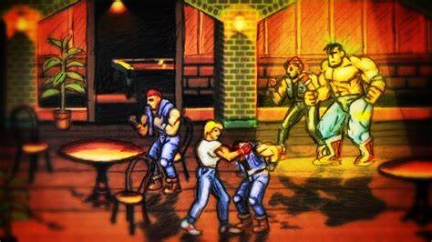

Jouer a un beat-em all comme Street of rage c'est bien, mais savez vous que les musiques de fond avait eu de nombreuses reprise avant la version final ?
La Saga des Street of rage

Il existe de nombreuses tentative de Speedrun sur les differents titre
Pour rappel : Un speedrun veux signifier que le but est de terminer le jeu le plus rapidement possible (et tout cela sans perdre une seul vie dans la pluparts des cas) ce qui rend ce défi assez complexe.
Et demande beaucoup de temps et d'entrainement pour maitriser complètement une mecanique de jeu!
Exemples de speedrun réaliser par des joueurs de la communauté
La version la plus récente a été créer et reprise par un compositeur français Olivier Deriviere ! Il possède une grande exérience dans la prodution musicale et travail principalmenet dans des petits studio indépendant afin d'exercé son savoir-faire
Ci contre vous pourez écouter quelques bandes sonore au format .mp3 (et .ogg pour tout les effets sonores annexes) ainsi que le titre du contenu afin de le retrouver sur Youtube ou d'autres réseau sociaux.
Themes du jeux "Street of rage 1" 1991 par SEGA. Le premier titre été très pixelisé et encore assez basique en terme de jouabilité (en plus des élements de décors assez répétitif). Mais il reste correct dans l'ensemble
Le second épisode de la saga, plus riche en contenu et plus rapide. Il offre de vrais moments d'action et de stratégie. Mais aussi une option de copération ou vous pouvez ajouter un 2ème joueur humain afin de pouvoir jouer a 2 en même temps et d'avancer plus facilement.
jeu le plus tactique de la serie, il vous donnera envie de le finir a 100%, sa bande son est l'une des meilleurs de la série, il a surtout gagner en popularité pour le nombre de personage jouable (7 au total au lieu de 4). Sachant que les cartouche mémoire de la Mega-drive n'avait que 16mbits de mémoire interne.
Apres la longue disparition de la licence dans la culture video-ludique (pres de 20ans entre Sor3 et Sor4), le dernier titre de la saga est annoncer au grand public pour le bonheur des nostaligiques comme pour la nouvelle generation.
L'ajout de nouveaux coups speciaux, une animation qui fait penser a un comic américain, des musiques d'ambience qui vont bien. C'est quasiment un sans faute pour cette conclusion.